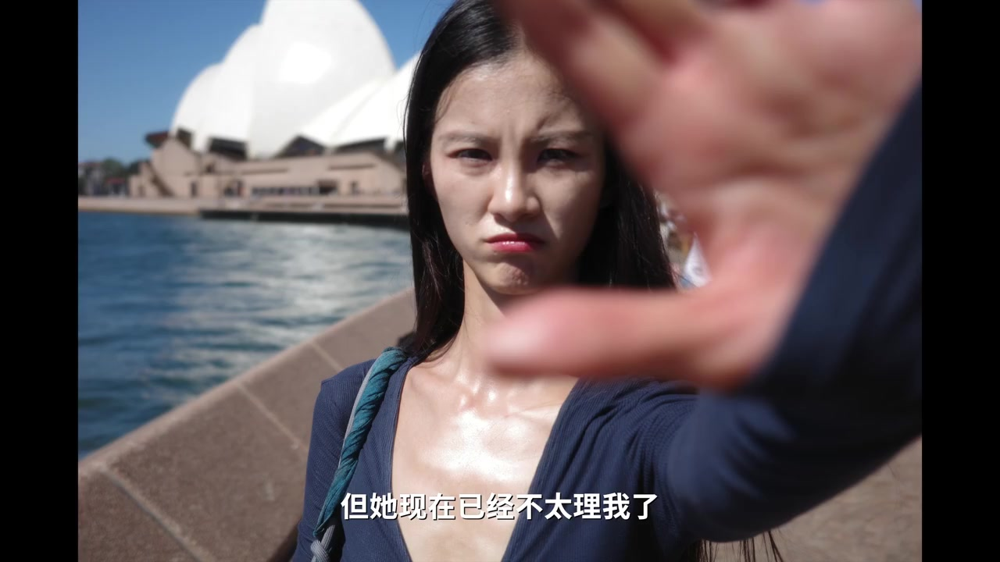
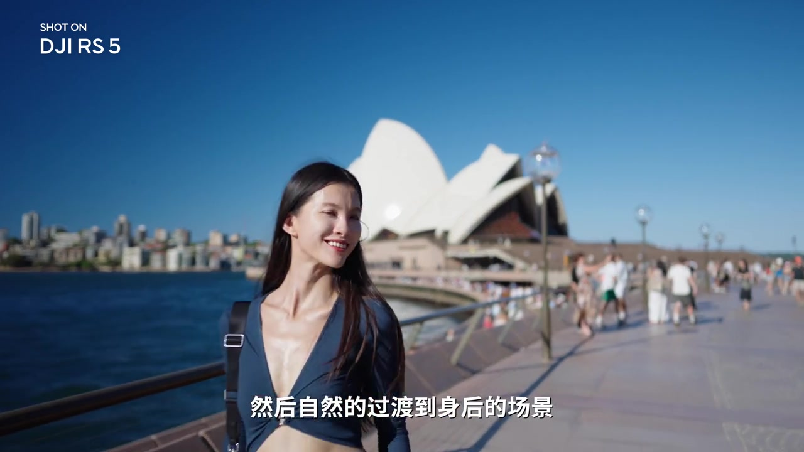
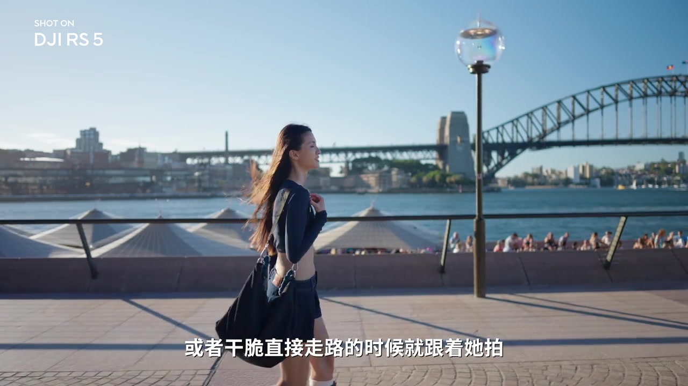
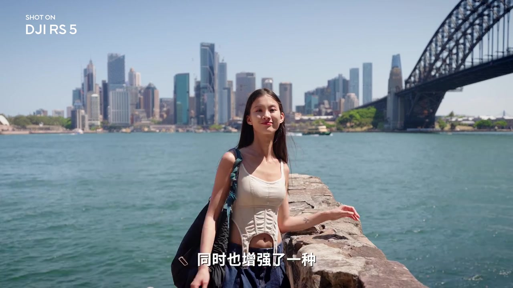
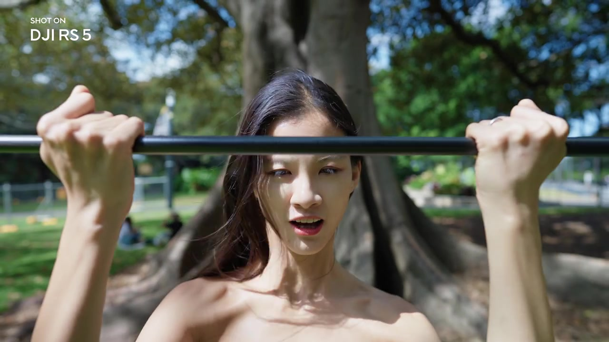
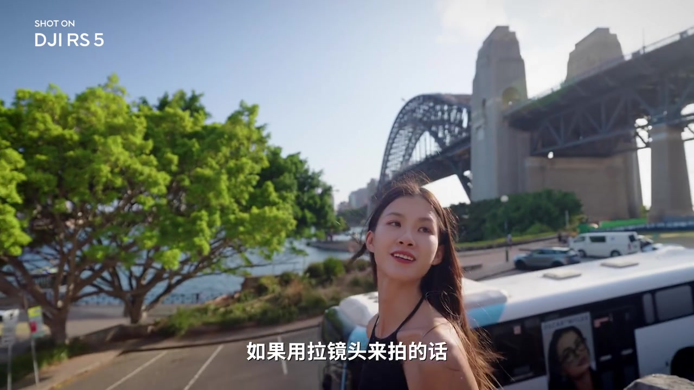

01
中文
既要有人物，又要有景色，还要活人感。
EN
She wants the person, the place and a sense of life.
表达提示sense of life（活人感）

Scene English · 摄影 · 运镜
3 Camera Moves That Make Videos Feel Alive
🎧 语音讲解
People, Place and Life
情境旅行第三天，女朋友不理我了，因为出片。她要的既有背脚拍进去，又要有人又有景，还有活人感。先找到运镜思路：从人物开始运镜，自然过渡到身后的场景，就同时展现了人物和景色。
既要有人物，又要有景色，还要活人感。
She wants the person, the place and a sense of life.
表达提示sense of life（活人感）
从人物开始运镜，自然过渡到身后场景。
Start on the person and glide to the scene behind.
表达提示glide（滑动）
sense of life（活人感
glide（滑动

The Push-In
情境这些画面都是简单的推镜头。推镜头可以拉近你和人物之间物理和内心的距离，同时也增强一种期待的感觉。旅行的时候就应该多拍些推镜头，它是一个很符合视觉逻辑的简单运镜。当镜头不断往前推的时候，就有一种很自然的去靠近人物的感觉，而且拍起来根本不需要技巧，只需要把相机拿稳然后慢慢往前走。
推镜头拉近物理和内心的距离。
The push-in closes both physical and emotional distance.
表达提示push-in（推镜头）
它增强期待感，符合视觉逻辑。
It builds anticipation and fits visual logic.
表达提示anticipation（期待感）
只需要拿稳相机慢慢往前走。
Just hold the camera steady and walk forward.
表达提示steady（稳）
push-in（推镜头
anticipation（期待感

The Pull-Back
情境和推镜头完全相反的就是拉镜头。镜头在向后拉的过程中，画面变得越来越广阔。旅拍时用拉镜头，随着景别变化，观众可以看到的信息越来越多。人物虽然没有做特别有趣的动作，但因为镜头一直在移动，整个画面也变得有趣了。
拉镜头让画面越来越广阔。
The pull-back opens up a wider world.
表达提示pull-back（拉镜头）
景别变化，观众看到的信息越来越多。
As the shot widens, viewers absorb more and more.
表达提示absorb（接收）
镜头在动，画面就变有趣。
A moving camera alone makes the shot engaging.
表达提示engaging（有趣的）
pull-back（拉镜头
absorb（接收

The Pull-Back as Mood and Ending
情境来到一个特别好看的场景，第一个反应是让人站进去拍。如果用拉镜头来拍，从细节开始再过渡到整个场景，就更能体现氛围感。这个时候再让人物离开画面，就是一个很好的vlog结尾。
从细节开始，再过渡到整个场景。
Start on a detail, then open to the whole scene.
表达提示open to（展开到）
拉镜头更能体现氛围感。
The pull-back brings out the atmosphere.
表达提示atmosphere（氛围感）
人物离开画面，就是很好的vlog结尾。
The person leaving the frame makes a great vlog closer.
表达提示closer（结尾）
open to（展开到
atmosphere（氛围感

The Orbit
情境还有一种更特别的运镜：环绕运镜。让人物保持一定距离，先从远景开始拍，然后慢慢环绕运镜去拍它的侧脸。这个镜头的秘诀就是环绕的时候，人物目光能一点跟着镜头的方向一起移动。这个运镜完全不挑场景，而且拍出来就有氛围感。
从远景开始，慢慢环绕拍侧脸。
Start wide, then orbit in toward the profile.
表达提示orbit（环绕）
秘诀：人物的目光跟着镜头方向移动。
The trick: the subject's gaze follows the camera.
表达提示gaze（目光）
完全不挑场景，拍出来就有氛围感。
It fits any scene and instantly feels cinematic.
表达提示fit any scene（不挑场景）
orbit（环绕
gaze（目光

Why Orbit Wins
情境环绕拍摄比起推进来说还有一个好处：它不需要特别大范围的移动。像在展露上，或者随意切换到比较空旷的场地，都是可以去无脑拍的一个简单运镜。
环绕不需要大范围移动。
Orbiting needs no large-scale movement.
表达提示large-scale（大范围）
在展台或空旷场地，都能无脑拍。
On a stage or an open field, it's a foolproof shot.
表达提示foolproof（无脑）
large-scale（大范围
foolproof（无脑
The Tracking Module Saves You
情境大幅度运镜时画面容易跑偏。如果不想花时间去练习稳定器运镜，可以利用追踪模块帮助运镜。比如R45的增强智能追踪模块，只需要在屏幕上框选一下就可以开启追踪，不仅可以追踪人，还可以追踪物体包括小动物。现在就不需要什么技巧，几乎可以闭着眼睛运镜。
大幅度运镜画面容易跑偏。
Big moves tend to drift off frame.
表达提示drift（跑偏）
屏幕框选一下，即可开启追踪。
Box the subject on screen to start tracking.
表达提示box（框选）
不仅能追踪人，还能追踪物体和小动物。
It tracks people, objects and even pets.
表达提示track（追踪）
drift（跑偏
box（框选
Choosing the Right Mode
情境稳定器的模式比较重要。无论手机稳定器还是专业稳定器，只有把档位调对，拍摄时画面才会更稳定。环绕运镜或跟随人物，只要在同一个水平线上，可以调整PF模式；想拍摇镜头，比如先跟随人物再上摇或下摇，可以调整PTF模式。
档位调对，画面才稳定。
The right mode keeps the shot stable.
表达提示mode（档位）
同一水平线用PF，环绕跟随都行。
PF mode handles orbits and follows on one level.
表达提示PF mode（PF模式）
拍摇镜头上摇下摇，用PTF。
For pans and tilts, switch to PTF.
表达提示PTF mode（PTF模式）
mode（档位
PF mode（PF模式
The Z-Axis Stability Meter
情境R45还有Z轴稳定指示器的功能。如果你上架抖动比较厉害，它就会变成红色；如果你的步伐比较稳定，它就会变成绿色。这个小功能很有意思：运镜的时候就会不自觉想走得更稳定一些。
抖动厉害时，指示器变红。
Heavy shake turns the indicator red.
表达提示indicator（指示器）
步伐稳定时，指示器变绿。
A steady gait turns it green.
表达提示gait（步伐）
看着颜色，就会不自觉走得更稳。
Watching the color makes you walk steadier by habit.
表达提示by habit（不自觉地）
indicator（指示器
gait（步伐
说推镜头
说拉镜头
说环绕秘诀
说追踪模块
固定机位拍再多也缺活人感
环绕时目光不跟镜头就散
档位不对画面就晃
大幅度运镜不追踪容易跑偏